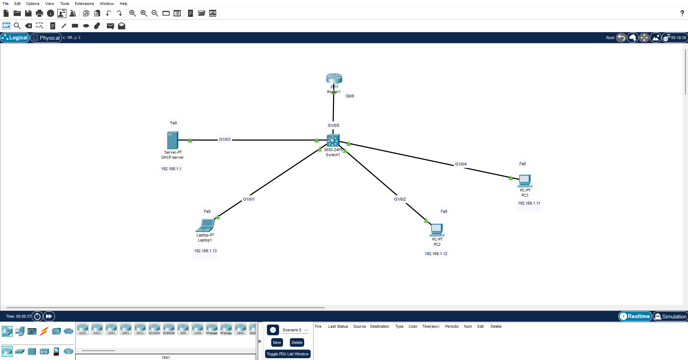
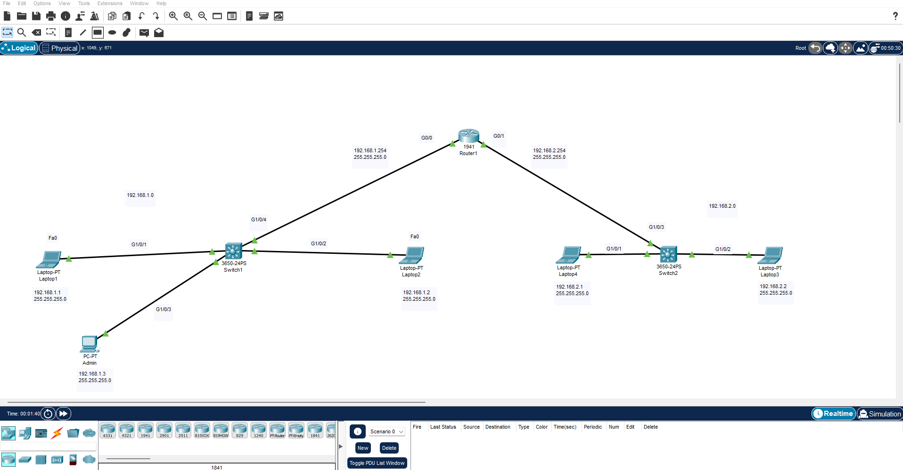

I wanted to get some hands on experience to accompany my CompTIA NET+ studies and apply some of the knowledge I have gained. I am actually currently on lesson 54 out of 87 which covers DHCP more in depth, so I decided one network topology would involve a DHCP server. Below are two pictures of two simple networks I created. Everything functioned correctly, so it's good to know I am learning something!

Above is a network consisting of a central switch, a router, and 4 end devices, those being 3 workstations and a DHCP server. I had to statically assign the DCHP server IP and default gateway. Once I did this, and connected the workstations to the switch, the DCHP automatically assigned the IPs for me, allowing local communication between devices. I had to use the CLI (Command Line Interface) to configure the Cisco router and assign it the ip that I wanted it to have. This involved researching commands for Cisco routers and learning how to access and configure interfaces on the router!

In this scenario shown above, I made another simple network, but this time the network had a total of 2 switches, 1 router, and 5 workstations. Since there were not VLANS established in this network, I was able to connect each switch to different gigabit interfaces on the router as labeled in the picture. Even with 2 switches, being connected to the same router allowed all devices to communicate with each other, which was verified using the ping command again.
It's nice to get some hands on experience, as Cisco Packet Tracer allows you to really configure and adjust settings, and for someone new to networking and cybersecurity like me, it's extremely valuable to be able to practice simulated environments!